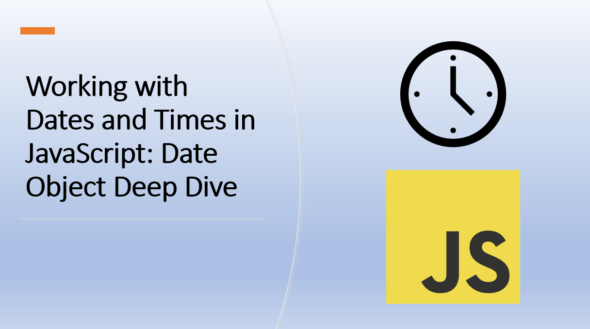

Introduction‚Äã
Dates and times are essential aspects of many applications, from scheduling events to calculating time intervals.
JavaScript provides the Date object, which allows you to work with dates, times, and time zones.
In this blog article, you will learn how to use the Date object to work with dates and times in JavaScript.
Let's explore the Date object in more detail.
1. Creating Dates‚Äã
The Date object can be created in multiple ways, including passing no arguments (creates the current date and time) or specifying a year, month, day, hour, minute, and second.
As an example:
const now = new Date();
const date = new Date(2021, 0, 1, 0, 0, 0);
In the above example:
- The
now variable is assigned a new Date object with no arguments. This creates a Date object for the current date and time. - The
date variable is assigned a new Date object with six arguments. This creates a Date object for January 1, 2021 at 12:00:00 AM.
The month is zero-based, so January is 0, February is 1, and so on.
Suggested Tutorials üìë:‚Äã
You can format dates using various methods, such as toLocaleString(), toLocaleDateString(), and toLocaleTimeString().
As an example:
const formattedDate = currentDate.toLocaleString();
const formattedDateOnly = currentDate.toLocaleDateString();
const formattedTimeOnly = currentDate.toLocaleTimeString();
In the above example:
- The
toLocaleString() method formats the date and time. - The
toLocaleDateString() method formats the date only. - The
toLocaleTimeString() method formats the time only.
3. Getting Date and Time Components‚Äã
You can get the date and time components of a Date object using various methods, such as getFullYear(), getMonth(), getDate(), getHours(), getMinutes(), and getSeconds().
As an example:
const year = date.getFullYear();
const month = date.getMonth();
const day = date.getDate();
const hour = date.getHours();
const minute = date.getMinutes();
const second = date.getSeconds();
Suggested Tutorials üìë:‚Äã
4. Working with Time Zones‚Äã
You can work with time zones using various methods, such as getTimezoneOffset() and toLocaleString().
As an example:
const offset = date.getTimezoneOffset();
const formattedDate = date.toLocaleString('en-US', { timeZone: 'America/New_York' });
In the above example:
- The
getTimezoneOffset() method returns the time zone offset in minutes. - The
toLocaleString() method formats the date and time for a specific time zone.
You can perform various calculations involving dates, such as finding the difference between two dates or adding/subtracting time intervals.
As an example:
const futureDate = new Date(2024, 11, 31);
const timeDifference = futureDate - currentDate;
const twoDaysLater = new Date(currentDate.getTime() + 2 * 24 * 60 * 60 * 1000);
In the above example:
- The
futureDate variable is assigned a new Date object for December 31, 2024. - The
timeDifference variable is assigned the difference between the futureDate and currentDate variables. This is the time difference in milliseconds. - The
twoDaysLater variable is assigned a new Date object for two days later than the currentDate variable.
6. Working with Epoch Time‚Äã
Epoch time is the number of seconds that have elapsed since January 1, 1970. You can convert a Date object to epoch time using the getTime() method.
As an example:
const epochTime = Date.now();
const epochDate = new Date(epochTime);
Suggested Tutorials üìë:‚Äã
7. Converting Dates to Strings‚Äã
You can convert a Date object to a string using the toString() method.
As an example:
const dateString = date.toString();
8. Handling Time intervals‚Äã
JavaScript's setInterval() and setTimeout() functions allow you to execute code at specific intervals.
As an example:
const intervalId = setInterval(() => {
console.log('Interval event');
}, 1000);
setTimeout(() => {
clearInterval(intervalId);
}, 5000);
In the above example:
- The
setInterval() function executes the code inside the callback function every second. - The
setTimeout() function stops the interval after 5 seconds.
Suggested Tutorials üìë:‚Äã
Conclusion‚Äã
The Date object in JavaScript is a versatile tool for working with dates, times, and time-related calculations. By understanding its various methods and properties, you can create, format, and manipulate dates to suit your application's needs. Whether you're calculating time intervals, handling time zones, or scheduling events, the Date object provides the necessary functionality to manage date and time-related tasks.
We hope you enjoyed this article.
Happy coding! üôå